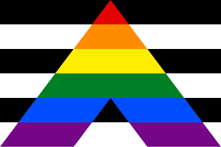
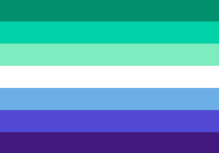
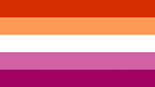
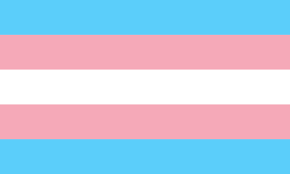
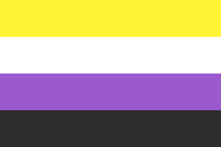
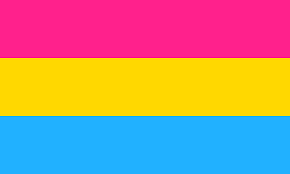
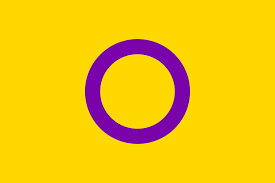

Heterosexual Flag
A flag composed of alternating black and white stripes, with a similar design to the rainbow LGBTQ+ pride flag, was created to represent straight pride.

Straight Ally
The Straight Ally flag is using the black white "colors" of the heterosexual flag as a field, it adds a large rainbow colored "A" (for "Ally") to indicate straight support for the Gay Pride/Equal Marriage movement.

Gay Flag
Meant to be inclusive of a much wide range of gay men, including but not limited to transgender, intersex, and gender nonconforming men.

Lesbian Flag
The shades of red and orange represent gender nonconformity, independence, and community; the white stripe represents a unique relationship to womanhood; and the shades of pink represent serenity and peace, love and sex, and femininity.

Bisexual Flag
Pink represents attraction to people of the same gender; blue represents an attraction to those of an opposite or different gender; and purple represents having an attraction to two or more genders.

Transgender Flag
Blue represents the traditional color for baby boys, pink represents the traditional color for baby girls, and white represents individuals transitioning, those with neutral or no gender, and those who are intersex.

Non-Binary Flag
Yellow represents people whose gender doesn’t exist within the cisgender binary; white represents people with all or many genders; purple represents people with mixed genders; and black represents people who identify as not having any gender.

Pansexual Flag
Hot pink represents individuals who identify as female, bright blue represents individuals who identify as male, and canary yellow represents individuals who identify anywhere in the gender spectrum.

Intersex Flag
Neither color is associated with the social constructs of the gender binary. The circle, perfect and unbroken, represents the wholeness of intersex people.